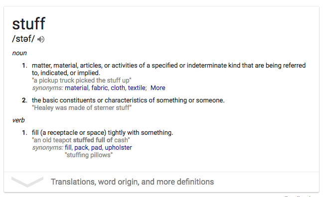

Friend Of Bruce Springsteen Has Been Thinking Of Excuses To Avoid Checking Out His Band For 50 Years
FREEHOLD, NJ- Saying it hasn't always been easy inventing reasons for not attending one of his gigs, local man John Gilman, 68, told reporters Thursday that he has spent approximately 50 years coming up with excuses to avoid checking out the band of high school classmate Bruce Springsteen.
An insurance adjuster and friend of Springsteen since the mid-1960s when the acclaimed singer-songwriter played small venues in Monmouth County, New Jersey, Gilman told reporters that over the past half century he has falsely cited homework, car trouble, his kids' baseball games, and late nights at the office as just a few of the reasons he could not be present at Springsteen's shows.
"After the first few times I told him I couldn't make it, I thought he'd take the hint and figure I just wasn't interested, but he’s never stopped asking,” said Gilman, who hastened to add that he couldn't be happier his friend's band is doing so well. "I love Bruce, but it's kind of a hassle to drop everything on a Friday night and drive up to Madison Square Garden or wherever. So I tell him I'm too busy to make it this time, but to count me in next time. I’ve been doing that since I was 17 years old."
"I remember back in '87 he gave me an early demo of Tunnel Of Love and told me he thought I'd really like it," Gilman continued. "I thanked him and said I'd give it a listen, but to be honest, it's just been sitting in a drawer."
In the decades since his friend formed the E Street Band and began to earn widespread critical accolades for albums like The Wild, The Innocent and The E Street Shuffle, Gilman confirmed he has lied about his absence at Springsteen's concerts by claiming he was sick 37 times, had a dinner party to attend 29 times, was out of town for a cousin's wedding 18 times, and, on seven occasions, had to get up early the next morning for a dentist appointment.
According to Gilman, the closest he has come to actually seeing his friend play was a night in 1971 when he walked by the Upstage Club in Asbury Park, noticed Springsteen’s band was on the bill, and briefly considered going inside. He ultimately concluded, however, that the venue was too crowded and would probably be too hot as well.
"It was really hard when he did that 10-night stand at the Meadowlands, because I had to come up with something new to tell him every night," said Gilman, referring to Springsteen's legendary series of performances at Giants Stadium during his 2003 tour for The Rising. "It was really sweet of him to send me front row tickets to all of those shows, but big, loud concerts like that just aren't my thing, you know?"
"Now anytime he has that many dates scheduled in New Jersey, I make sure to tell him I'm on vacation," added Gilman.
To Gilman's surprise, the multiplatinum recording artist has only grown more insistent in recent years, even going so far as to send him a copy of 2012's Grammy-nominated Wrecking Ball and then call him a few days later to ask if he liked it. In order to avoid wounding his friend's pride, Gilman reportedly glanced at the track list and remarked that "Easy Money" was "really great," despite having never listened to it or any other song in Springsteen's 18-album catalog.
"Sometimes I get lucky and there's a real-life event I can use as an excuse, like that time in '93 when an accident in the Lincoln Tunnel had traffic backed up so bad I wouldn’t have been able to make it to his MTV Unplugged taping even if I'd wanted to," Gilman said. "But for the most part, it just gets harder over the years. There are only so many ways I can change the subject when he asks if I've gotten around to checking out 'Built To Run' or whatever."
"I do occasionally feel guilty," he added. "I mean, Bruce and his bandmates have helped me move like half a dozen times."
Stuff...
Stuff
click the box